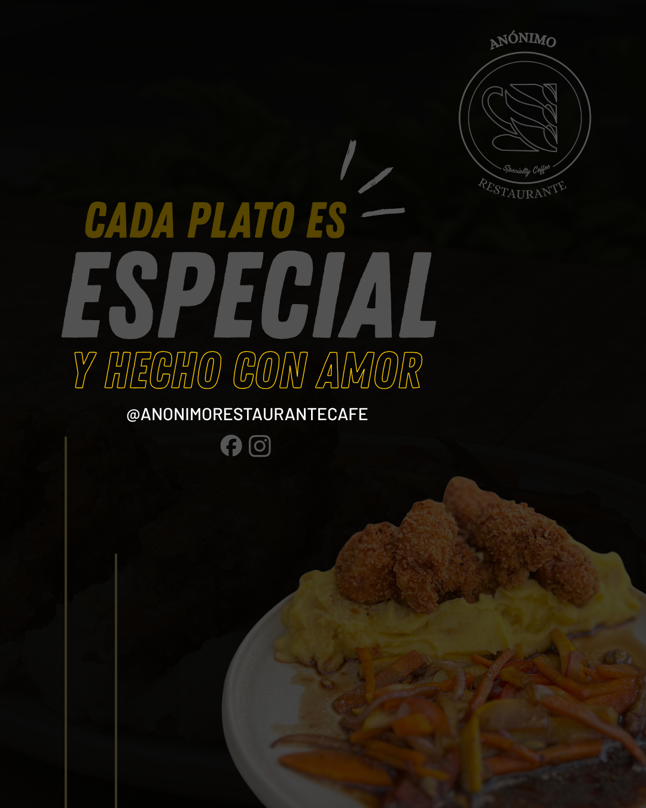
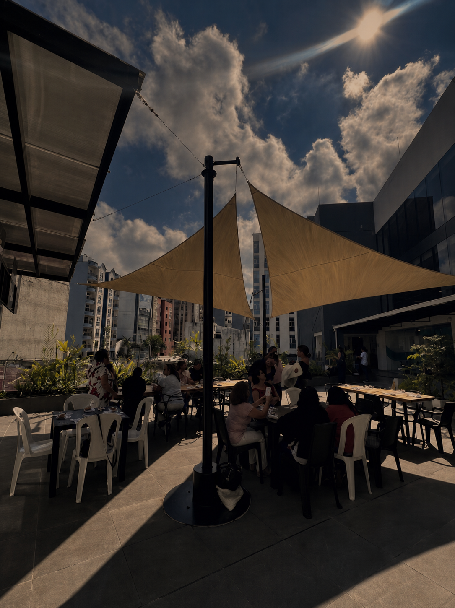

Desayunos
Huevos al gusto
Prepáralos como más te gustan: omelette de la casa, huevos fritos, pericos o revueltos.

01 / ESENCIA
En Anónimo combinamos cocina, café y una atención cercana para convertir lo cotidiano en una experiencia especial. Cada preparación nace del cuidado por los detalles y del gusto por compartir.
Conoce nuestros sabores →02 / ÍNDICE
Sabores, bebidas y experiencias pensadas para cada momento.
03 / DESAYUNOS
Opciones para comenzar el día con el sabor y el cuidado de Anónimo.
Desayunos
Prepáralos como más te gustan: omelette de la casa, huevos fritos, pericos o revueltos.
Desayunos
Waffle elaborado con masa de pandebono y acompañado de las salsas de la casa.
Pasteles
Pastel de hojaldre crocante relleno con pollo.
Pasteles
Hojaldre crocante relleno de salchicha ranchera, queso y maíz tierno.
Pasteles
Hojaldre dorado con jamón, piña y queso.
Pasteles
Hojaldre suave relleno de queso.
Pasteles
Hojaldre relleno de guayaba dulce y de suave sabor.
Pasteles
Hojaldre crujiente con arequipe cremoso en su interior.
Pasteles
Capas de hojaldre rellenas con crema inglesa y una capa superior de arequipe.
Pasteles
Mini hojaldres rellenos de dulce de guayaba para compartir.
04 / ALMUERZOS
Preparaciones reconfortantes, hechas con ingredientes que resaltan el sabor de nuestra cocina.
Almuerzos
Solomito de cerdo y champiñones acompañados de pasta en una suave salsa bechamel.
Almuerzos
Pollo crocante acompañado de puré de papa y verduras salteadas.
Almuerzos
Pasta en salsa boloñesa acompañada de tostadas con finas hierbas.
Almuerzos
Pasta con pollo y champiñones acompañada de tostadas con finas hierbas.
Almuerzos
Pasta en cremosa salsa carbonara acompañada de tostadas con finas hierbas.
Almuerzos
Crepes rellenos de pollo con champiñones y salsa boloñesa.
05 / BEBIDAS
Opciones calientes y frías para acompañar cada momento en Anónimo.
Bebidas
Bebida artesanal hecha a base de café, servida fría y cremosa.
Bebidas
Café frío tradicional, disponible también en presentación de frutos amarillos.
Bebidas
Bebida refrescante en sabores de frutos rojos o frutos amarillos.
Bebidas
Café de la casa preparado para compartir en presentación de dos tazas.
Bebidas
Café de la casa mezclado con leche para una bebida suave y reconfortante.
Bebidas
Bebida gaseosa clásica para acompañar tus platos favoritos.
Bebidas
Bebida de avena fría, cremosa y refrescante.
Bebidas
Bebida de chocolate con leche, preparada fría o caliente.
Bebidas
Jugos naturales de guanábana, maracuyá, mango o mora preparados en agua.
Bebidas
Jugos naturales preparados en leche para una textura más cremosa.
Bebidas
Leche fría servida para disfrutar sola o acompañar nuestros pasteles.
Bebidas
Agua en presentación personal de 600 mililitros.
Bebidas
Infusión aromática preparada en agua o en leche.
Bebidas
Chocolate caliente preparado en agua, de sabor intenso y tradicional.
Bebidas
Chocolate caliente preparado con leche para una textura suave y cremosa.
06 / CATERING
Llevamos la experiencia de Anónimo a tus reuniones, celebraciones y momentos especiales.
Servicio de catering
Propuestas gastronómicas para reuniones de trabajo, encuentros empresariales y jornadas de equipo.
Servicio de catering
Preparaciones pensadas para compartir en cumpleaños, aniversarios y encuentros especiales.
Servicio de catering
Café, bebidas y pasabocas para acompañar pausas, capacitaciones y reuniones.
Servicio de catering
Opciones adaptadas al tipo de evento, número de invitados y necesidades de cada ocasión.

08 / EVENTOS
Un espacio privado y tranquilo, disponible con reserva previa para eventos de hasta 50 personas. Celebra y comparte con comodidad, lejos del tránsito constante y las interrupciones.
Reserva tu evento →09 / CONTACTO
Haz tu pedido o reserva directamente por WhatsApp.
+57 311 311 33 11 ↗